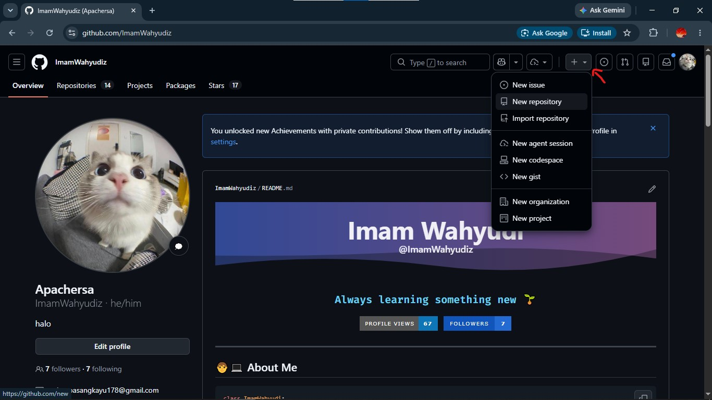

1. Git vs GitHub
Sebelum mulai, penting banget tahu bedanya Git dan GitHub:
| Fitur | Git | GitHub |
|---|---|---|
| Definisi | Perangkat lunak Version Control System (VCS) yang jalan di komputer lokal. | Platform online (cloud) untuk menyimpan dan mengelola repository Git. |
| Fungsi Utama | Mencatat riwayat perubahan kode di laptop kamu sendiri. | Tempat berbagi kode, kolaborasi tim, dan publikasi project. |
| Koneksi Internet | Tidak butuh internet. | Butuh koneksi internet. |
| Interface | Lewat perintah teks / CLI (Git Bash atau Terminal). | Berbasis web (tampilan antarmuka / GUI). |
2. Panduan Instalasi Git
- Unduh installer resmi Git dari git-scm.com/download/win.
- Jalankan file
.exeyang sudah diunduh. - Klik Next pada opsi default (pilih Git Bash dan Use Visual Studio Code as Git's default editor).
- Klik Install dan tunggu sampai selesai.
Buka Terminal macOS, lalu ketik:
xcode-select --installAtau via Homebrew:
brew install gitUntuk Ubuntu/Debian:
sudo apt update
sudo apt install git -yVerifikasi Instalasi
Buka Terminal atau Git Bash, lalu ketik:
git --versionJika muncul git version 2.x.x, berarti Git sudah berhasil terinstal.
git --version, lihat panduan Mengatasi Error Git di Troubleshooting.3. Konfigurasi Identitas Git
Setiap kali kamu membuat commit, Git butuh tahu siapa penulisnya. Jadi langkah pertama setelah instalasi adalah menyetel Nama dan Email.
Buka Terminal atau Git Bash:
# 1. Masukkan Nama Lengkapmu
git config --global user.name "Nama Lengkap Kamu"
# 2. Masukkan Email (Pastikan sama dengan akun GitHub-mu!)
git config --global user.email "emailkamu@example.com"Mengecek Hasil Konfigurasi
git config --list4. Membuat Akun & Repository di GitHub
A. Membuat Akun GitHub
- Buka github.com.
- Klik Sign up dan ikuti proses pendaftarannya.
- Verifikasi email kamu.
B. Membuat Repository Baru di GitHub
- Login ke akun GitHub.
- Klik tombol + di pojok kanan atas → pilih New repository.
- Isi informasi project:
- Repository name: Nama project (contoh:
latihan-infonic). - Description: Deskripsi singkat (opsional).
- Public / Private: Pilih Public kalau mau dilihat semua orang.
- Initialize this repository with: Biarkan kosong (jangan centang Add a README file dulu).
- Repository name: Nama project (contoh:
- Klik Create repository.

Membuat repository baru di GitHub
5. Workflow Utama Git & GitHub
Biasanya ada 2 skenario umum saat kerja pakai Git & GitHub:
Mengambil Repo yang Sudah Ada
Panitia atau mentor sudah menyiapkan repository di GitHub dan kamu tinggal mengunduh lalu mengerjakannya. Menggunakan git clone dan git pull.
Membuat Repo Baru dari Lokal
Kamu membuat project dari nol di laptopmu dan mau kamu unggah ke GitHub. Menggunakan git init sampai git push.
…° Skenario A: Mengambil Repo yang Sudah Ada
Langkah A.1: Menyalin Repository ke Lokal (git clone)
Buka terminal di folder yang kamu inginkan, lalu jalankan:
git clone https://github.com/username-panitia/nama-repo-infonic.gitPerintah ini akan menyalin seluruh folder beserta histori Git dari GitHub ke laptopmu. Kemudian masuk ke folder hasil clone:
cd nama-repo-infonicLangkah A.2: Mengambil & Memperbarui Kode Terbaru (git pull)
Misalnya teman setim kamu bikin perubahan dan mengunggahnya ke GitHub, kamu bisa ambil update terbarunya dengan:
git pull origin maingit pull setiap kali mau mulai ngoding, supaya kodemu selalu up to date dengan versi terbaru di GitHub.…± Skenario B: Membuat Repository Baru dari Lokal
Langkah B.1: Inisialisasi Repository Lokal (git init)
Buka terminal VS Code di dalam folder projectmu, lalu ketik:
git initIni akan membuat folder rahasia .git yang kerjanya memantau segala perubahan kodemu.
Langkah B.2: Menambahkan File ke Staging Area (git add)
Cek dulu status perubahanmu:
git statusMasukkan file yang kamu kerjakan ke Staging Area (keranjang persiapan):
# Tambah 1 file aja:
git add nama_file.ext
# Tambah SEMUA file sekaligus:
git add .Langkah B.3: Menyimpan Snapshot (git commit)
Sekarang saatnya kamu simpan perubahan tersebut ke riwayat Git dengan pesan yang jelas:
git commit -m "feat: inisialisasi project dan menambah file awal"-m "pesan" dan masuk ke editor aneh (Vim/Nano), baca cara keluarnya di Troubleshooting.Langkah B.4: Mengatur Branch Utama (git branch -M main)
Biar nama branch utamamu cocok sama bawaan GitHub (main), jalankan:
git branch -M mainLangkah B.5: Menghubungkan ke GitHub (git remote)
Sambungkan folder lokal kamu sama repository yang udah dibuat di GitHub tadi:
git remote add origin https://github.com/username-kamu/latihan-infonic.gitCek lagi apakah sudah sukses tersambung:
git remote -vLangkah B.6: Mengirim Kode ke GitHub (git push)
Tinggal satu langkah lagi! Kirim semua hasil kerjamu ke GitHub:
git push -u origin mainTanda -u biar nanti-nanti kamu cuma perlu ngetik git push aja.
6. Perintah Git Lain yang Sering Digunakan
git log
Buat ngecek riwayat commit apa aja yang udah kamu buat:
git log --onelinegit status
Ngecek status folder kamu (apa ada file baru, diedit, atau belum di-commit):
git statusgit restore & git reset (Membatalkan Kesalahan)
Kalau kamu tidak sengaja mengedit file yang salah atau salah membuat commit, jangan panik:
# Batalkan perubahan pada 1 file yang belum di-commit:
git restore nama_file.ext
# Batalkan commit terakhir (tanpa menghapus file):
git reset --soft HEAD~1git branch & git checkout
Kalau kamu butuh bikin cabang baru untuk fitur khusus:
# Lihat semua branch:
git branch
# Bikin branch baru dan pindah ke sana:
git checkout -b feature-baru
# atau:
git switch -c feature-baru7. Mengenal File .gitignore
File .gitignore penting banget supaya file rahasia (kayak password di .env) atau file sampah cache tidak ikut ke-upload ke GitHub.
Contoh isi .gitignore:
node_modules/
.env
*.log
.DS_Store
Thumbs.db
__pycache__/Rangkuman Perintah Cepat (Cheat Sheet)
“¥ Mengambil Repo dari GitHub
git clone <URL_REPO_GITHUB>
cd <NAMA_FOLDER>
git pull origin main“¤ Membuat Repo Baru dari Awal
git init
git add .
git commit -m "pesan singkat"
git branch -M main
git remote add origin <URL_REPO_GITHUB>
git push -u origin main